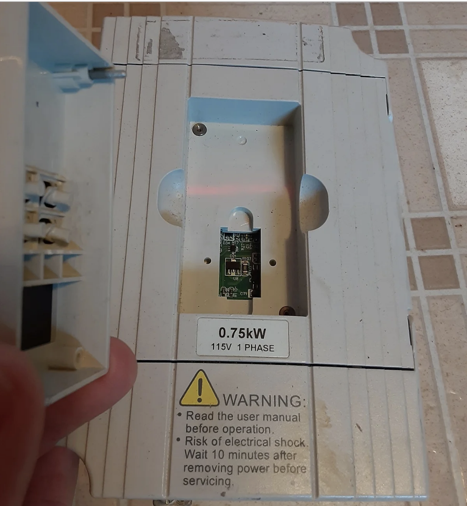
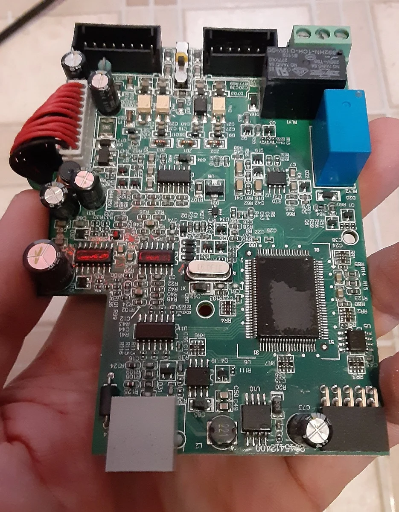
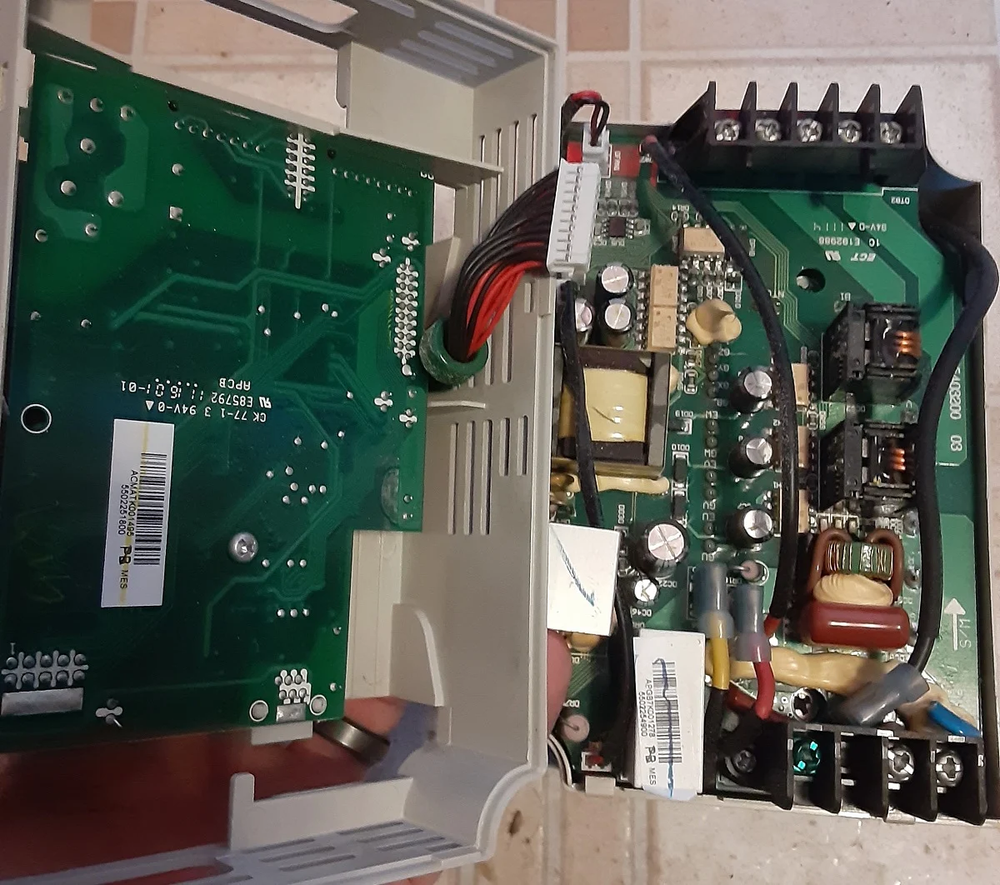
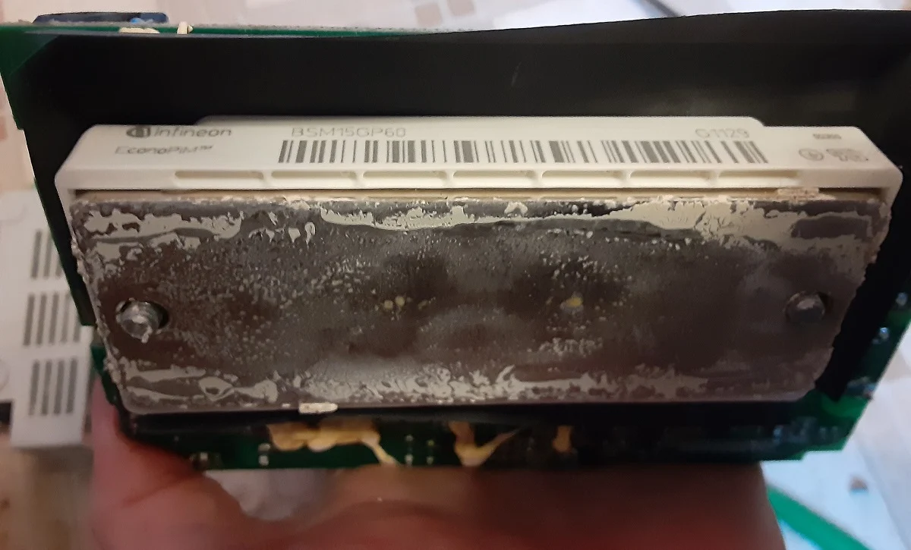
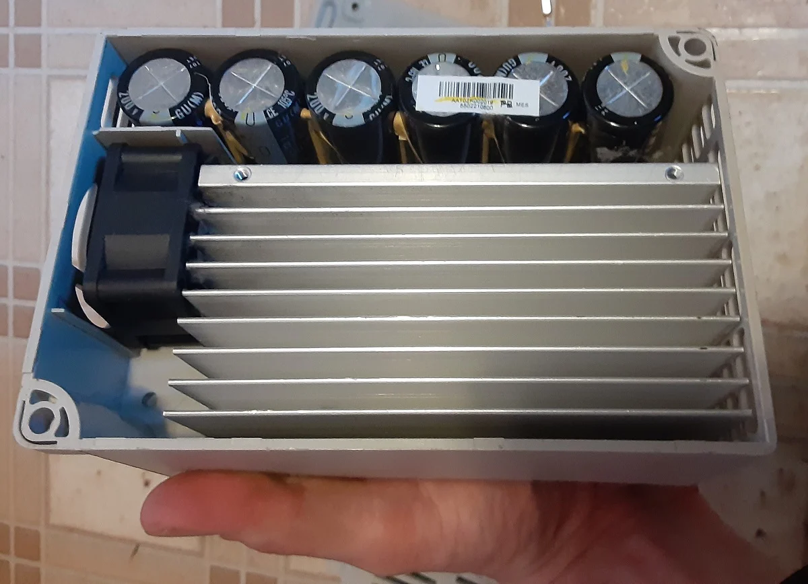
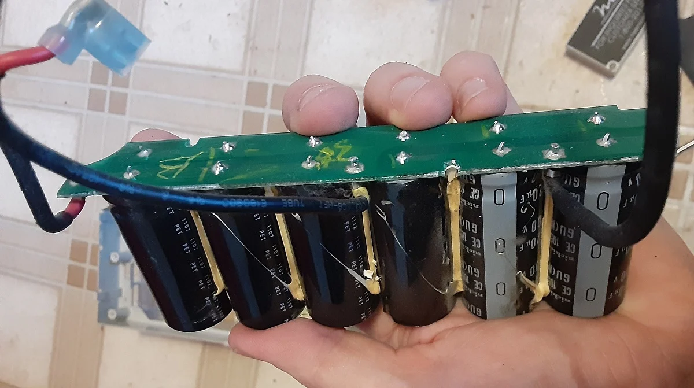

O que é um VFD?
O inversor de frequência, também chamado de VFD, sigla para Variable Frequency Drive, é um equipamento eletrônico utilizado para controlar motores elétricos, especialmente motores de indução trifásicos.
Sua função principal é variar a velocidade e o torque do motor por meio do controle da frequência e da tensão fornecidas na saída. Na prática, isso permite adaptar o motor à necessidade real do processo em vez de fazê-lo operar sempre em velocidade fixa.
Visão geral do funcionamento
Embora externamente o VFD pareça apenas uma caixa com bornes de conexão, internamente ele reúne módulos eletrônicos que trabalham de forma integrada. O processo básico pode ser resumido em três etapas:
- entrada de energia em corrente alternada;
- conversão dessa energia para corrente contínua;
- reconversão para corrente alternada controlada.
Essa sequência AC para DC e depois DC para AC é o que permite ao inversor entregar uma frequência ajustável ao motor.
Interface Homem-Máquina (HMI)
A camada mais externa de muitos VFDs é a Interface Homem-Máquina, conhecida como HMI. Ela pode ter botões, display simples ou tela em modelos mais modernos.
Pela HMI é possível monitorar parâmetros como velocidade, corrente e falhas, além de configurar rampas, limites, modos de operação e variáveis do processo. Em aplicações industriais, é comum proteger essa interface para evitar alterações não autorizadas.

Entradas, saídas e comunicação
Abaixo da interface normalmente está a placa responsável pelas conexões de controle. Ela recebe sinais de sensores, comandos externos e interfaces de comunicação.
Entre os recursos mais comuns estão entradas digitais, saídas digitais, sinalização de falhas e interfaces de rede. Isso permite integrar o VFD a CLPs, sistemas supervisórios, redes industriais e painéis de automação.
Conexões de potência
O VFD possui terminais dedicados para entrada de energia, saída para o motor e, em algumas aplicações, conexão para resistor de frenagem. A alimentação pode ser monofásica ou trifásica, dependendo do modelo, mas a saída para o motor é tipicamente trifásica controlada.

Conversão de energia
O funcionamento interno começa com a retificação. Nessa etapa, a corrente alternada de entrada é convertida em corrente contínua. Em seguida, a tensão DC passa por filtragem para reduzir ondulações e estabilizar o barramento.
Na etapa final, a corrente contínua é reconvertida em corrente alternada com frequência controlada. Essa reconversão é feita por semicondutores de potência que chaveiam rapidamente para construir a forma de onda entregue ao motor.
Módulo IGBT
O componente principal da etapa de saída é o módulo IGBT, sigla para Insulated Gate Bipolar Transistor. Ele combina alta velocidade de chaveamento com capacidade de trabalhar com potências elevadas.
Em um VFD trifásico, seis IGBTs são organizados para gerar as três fases de saída. Eles operam em liga e desliga em alta velocidade, criando uma forma de onda que simula uma senoide e permite controlar a velocidade do motor.

Sistema de refrigeração
Durante a operação, os componentes de potência geram calor. Por isso, o inversor utiliza dissipador de calor e, em muitos modelos, ventilador.
Falta de ventilação no painel, acúmulo de poeira e falha do ventilador podem elevar a temperatura interna e reduzir a vida útil do equipamento.

Capacitores do barramento DC
Os capacitores do barramento DC têm papel essencial na filtragem e estabilização da tensão contínua. Eles reduzem ondulações e ajudam a manter o sistema estável durante a operação.
Com o tempo, capacitores eletrolíticos podem degradar, especialmente quando o equipamento fica longos períodos sem uso. Uma boa prática é energizar periodicamente o VFD para preservar os capacitores.

Exemplo prático: bomba industrial
Em uma bomba industrial ligada diretamente à rede elétrica, o motor trabalha em velocidade fixa. Muitas vezes, o controle de vazão é feito por válvula, o que desperdiça energia e aumenta o desgaste mecânico.
Ao instalar um VFD entre a rede e o motor, a frequência pode ser ajustada conforme a necessidade do processo. A configuração pode definir faixas como 30 Hz a 60 Hz, além de rampas de aceleração e desaceleração.
O resultado é controle mais preciso da vazão, menor consumo de energia e redução do desgaste mecânico. Dependendo da aplicação, a economia pode chegar a uma faixa significativa, especialmente em cargas como bombas e ventiladores.
Resumo
O VFD combina eletrônica de potência, controle digital, comunicação industrial e gerenciamento térmico. Seu funcionamento depende da integração entre HMI, placa de controle, retificador, barramento DC, capacitores, IGBTs e sistema de refrigeração.
Entender essa estrutura ajuda na especificação, operação, manutenção e diagnóstico de falhas em aplicações industriais.